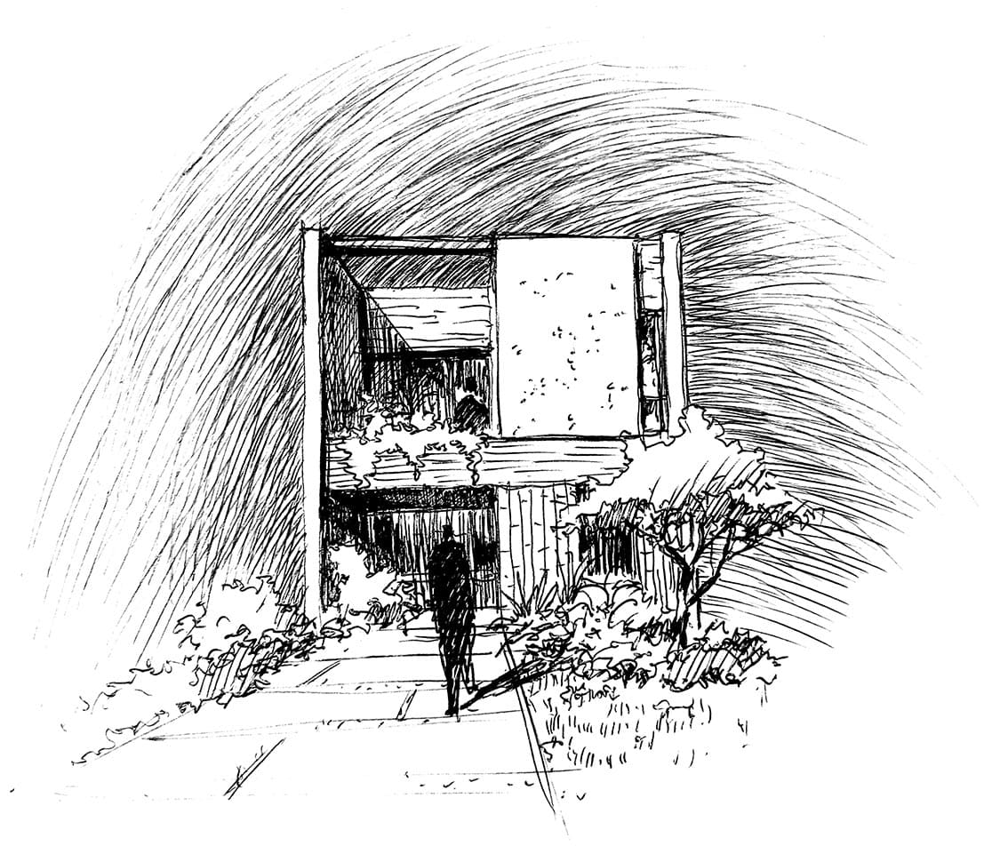

Casa CL - Vivienda unifamiliar
2024. Berazategui. Prov. de Buenos Aires
La propuesta responde principalmente a su condición de lote entre medianeras.
La vivienda es proyectada en dos niveles ubicada entre “muros divisorios elevados” que contienen los usos sociales y privados de la unidad. Estos muros se materializan a modo de “tapas o planos” opacos, que contienen las fachadas principales de frente y contrafrente.
-
Info
- Los mismos se distinguen como elementos verticales de composición de la fachada. Dejando a la vista los elementos básicos de la vivienda: muros de envolvente, cubierta y aberturas de expansión, ventilación e ingreso.
- Los sectores privados se materializan con una envolvente neutra y opaca y los sectores sociales con una textura con color cálido, siendo en este caso las tejuelas de ladrillo.
- La vivienda se organiza en dos niveles. La planta baja social y de servicios con una galería de expansión al parque del contrafrente. Y la planta alta privada con los dormitorios y su servicio y sector de estudio.
A su vez estos dos niveles son atravesados por un patio interno, que cumple el rol de iluminar y ventilar los ambientes. Siendo esta una estrategia necesaria al tratarse de un lote de dimensiones acotadas.
Aspectos funcionales:
-
Ubicación: Barrio Fedrico, Sourigues. Berazategui – Prov. de Buenos Aires – Argentina
-
Superficie: B113m2 Cubierto // 20m2 Semicubierto
-
Año: 2024
